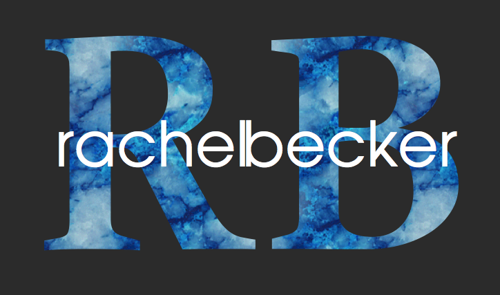

Skip to Main Content

Home
Deloitte Design Studio
Workday Research Jam
Website Revamp
Website Creation
Website Redesign
Résumé
JAMES BOND WEBSITE RECREATION
Tasked with the redesign the James Bond Museum Website.
You can view the original site
here
Below is my prototyped recreation